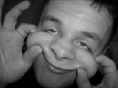

die aszel
soso, das isser also. möchtegernstudent und nichtsnutz ohne echte aufgabe.
und weil ich nix zu tun hab bau ich eben ne website.yes.
ich seh die seite hier eher als übung zum thema css-programmierung.also wenn du
`nen verbesserungsvorschlag oder so hast tu dir keinen zwang an.
der bart is wieder ab weil ich nach dem letzten umzug kein spiegel mehr hatte...
nur mal kurz:
bushido hat nur sinnfreie texte zu bieten, den weltfrieden wird`s nie geben, in meiner
straße liegt zuviel hundescheiße, ohne alkohol geht es nicht hab ich feststellen müssen,
ich sollte mal wieder gemüse essen, meine nase wurde mir schon zwei mal gebrochen, okan is cool,
ash auch, ich werd jetzt computer-nerd.
ach ja... bayern ist scheiße, weißwuscht schmeckt mir aber - das war`s erstmal
ps: bin noch nich fertig mit der seite also nich meckern..ja?